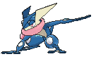
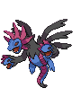
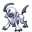
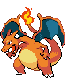

-
Greninja #658
- Água
- Escuridão
Cria estrelas arremessadas a partir de água comprimida. Quando as gira e as joga em alta velocidade, essas estrelas podem dividir o metal em dois.
-
Gengar #094

- Fantasma
- Veneno
Para roubar a vida de seu alvo, ele se esconde na sombra da presa e silenciosamente espera por uma oportunidade.
-
Garchomp #445

- Dragão
- Terra
Diz-se que quando alguém corre em alta velocidade, suas asas criam lâminas de vento que podem derrubar árvores próximas.
-
Lucario #448

- Lutador
- Ferro
Diz-se que nenhum inimigo pode permanecer invisível para Lucario, uma vez que pode detectar auras - mesmo aquelas de inimigos que de outra forma não poderia ver.
-
Samurott #503
- Água
No tempo que um inimigo leva para piscar, ele pode sacar e embainhar os seatars presos às suas patas dianteiras.
-
Hydragon #635
- Escuridão
- Dragão
Apenas a cabeça central tem cérebro. É muito inteligente, mas só pensa em destruição.
-
Absol #359
- Escuridão
Rápido como o vento, Absol corre pelos campos e montanhas. Seu chifre curvo em forma de arco é extremamente sensível aos sinais de alerta de desastres naturais.
-
Blaziken #257
- Fogo
- Lutador
Em batalha, Blaziken lança chamas intensas de seus pulsos e ataca os inimigos corajosamente. Quanto mais forte o inimigo, mais intensamente os pulsos deste Pokémon queimam.
-
Salamence #373
- Dragão
- Voador
Ele voa em suas asas, que finalmente cresceram. Em sua felicidade, jorra chamas quentes, queimando tudo por onde passa.
-
Charizard #006
- Fogo
- Voador
Ele cospe fogo que é quente o suficiente para derreter pedras. Pode causar incêndios florestais soprando chamas.